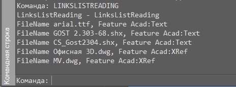

Свернуть все
Свернуть все Развернуть все
Развернуть все|
Справочное руководство .NET API
|
    
Закрыть
|
|
Как просмотреть список внешних ссылок dwg-документа
Свернуть всеРазвернуть все|
Справочное руководство .NET API
|
Закрыть
|
|
В этой статье приведен пример того, как просмотреть все внешние зависимости, которые присутстсвуют в dwg-документе.
Описание
Если запустить команду LINKSLISTREADING в dwg-документе, где есть несколько зависимостей от других dwg-документов, то можно увидеть следующий результат:

В данном dwg-документе есть две зависимости с документами "Офисная 3D.dwg" и "MV.dwg". У зависимостей между dwg-документами тип Acad:XRef.